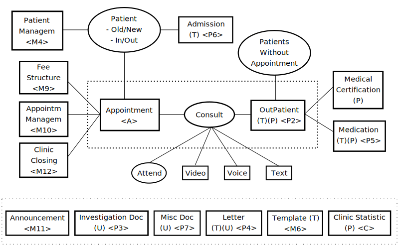

Functional Description
Infini Appt is a web-based system for doctors to administer their consultation businesses in an
effective
and
efficient manner by having a centralised workplace to manage appointments, consultations and
follow
up
actions.
Supported modes of consultation:
1. Attendance
2. Video call
3. Voice call
4. Text messaging
System Components
| (T) | Page where a Template can be retrieved as a draft for documentation. |
| (U) | Page where files can be uploaded in the following formats: 1. Image 2. PDF 3. Word. |
| (P) | Page where Printout can be generated: - Outpatient page to print patient's Prescription and Discharge Summary |
| <Menu Option> | Refers to items in menu. |
Central processes of Infini Appt:
Appointment -> Consult -> Outpatient
Notes:
1. Settings in Fee Structure + Appointment Management + Clinic Closing will be used by
Dr How mobile/web applications when patient is making new appointments.
2. Consultation can be conducted in one of four modes: Attend, Video, Voice and Text.
3. Admission allows doctors to register new patient into the
patients database, which is
managed by Patient Management.
Patient
Patients are categorised into two categories for the purpose of fees charging - Old and
New.
First
time
patients are categorised as New and charged a different fee structure to Old patients who have
visited
more
than once. Consultation fees are set in Fee Structure
Patient's particulars can be accessed from Patient Management
and
Patient Info Summary. Patient's particulars are not editable.
Appointment Page
Central to the daily business operation of the Doctor is the consultation being made to registered appointments of the day. The starting page for the Doctor would be the Appointment page:.
Options for the Doctor:| 1 | Search appointment by Patient's IC or Name. |
| 2 | Review appointment registered for today and future dates. |
| 3 | Start the consultation sessions for today by pressing the START button. A message will be prompted if START button is pressed when 1. there is no appointment for the day; 2. appointment list of a future date is being selected. |
| 1 | Access profile picture of Patients (click on Patient's picture). |
| 2 | Access the Outpatient records of Patients (click on Patient's Name). |
| 3 | Access the Patient Info Summary of Patients (click on Patient's IC number). |
| 4 | Change the date of Patient's appointments. |
| 5 | Cancel(Delete) Patient's unregistered appointments. |
Consultation Sessions
-> Start consultation sessions for the day:
| 1 | START: Current day consultation sessions will be started by clicking START button. START button is enabled for clicking only when appointment list of current day is selected. |
-> During the consultation session:
| 1 |
Doctor initiates the consultation of an appointment by clicking on the Mode cell of
the
appointment. The Doctor will then be directed to the appropriate page: Attend -> Outpatient page Video -> Video Call Page Voice -> Voice Call Page At the end of Video Call and Voice Call, when the Doctor clicks the END button to terminate the video or voice call, the Doctor will be directed to the Outpatient page. |
| 2 | After returning to Appointment page from Outpatient page, Doctor clicks FINISH to end the
current consultation session to attend to the next
appointment.
Based on
the finished time of current appointment, the estimated
times for all unattended
appointments
will be recalculated and informed to the patients through Dr How mobile/web
applications.
Doctor then has the options to: 1. skip the next appointment by pressing SKIP of the next appointment 2. start any other appointments by pressing EMERGENCY START of the selected appointment 3. hold consultation session to temporary attend to urgent matters by pressing HOLD. |
| 3 | SKIP: Doctor skips a selected appointment by clicking SKIP of the selected appointment. The skipped appointment will be pushed back to a preset number (in System Parameter) of places down the appointment list. The maximum number fo skips that can be performed is also preset in System Parameter. At the last permitted skip, the appointment will be pushed to the last of the appointment list. After each skip action, the estimated times of all other appointments will be recalculated. |
| 4 | EMERGENCY START: Doctor selects an appointment to attend next by clicking EMERGENCY START of the selected appointment. If the selected appointment is not the first of the list, the selected appointment will be promoted to the Next To Be Served position and the estimated times for all other appointments will be recalculated and informed to the patient through Dr How mobile/web appliations. |
| 5 | HOLD/RESUME: Doctor can hold the consultation sessions by clicking the HOLD button to attend to other matters. Patients will be informed about the status of the consulatation sessions through Dr How mobile/web application by showing a HOLDING message. When the Doctor restarts the consultation session by clicking RESUME button, estimated times for all appointments will be recalculated and informed to patients throught Dr How mobile/web applications. |
| 6 | Appointments for Text Mode are located in a separate tab in the Appointment page. Doctors can reply to the Text Messaging appointments at his discretion. |
Appointment's Sequence
When patients make appointments with doctors, patients can prioritise appointments being
Elective or Premier. Elective and Premier appointments are ordered differently for
consultation.
After an appointment is made, it needs to be registered before being consulted by its doctor.
As an Elective appointment, before it is registered, it will not be included in the calculation
of
its
doctor's waiting time for consultation. Only when it is registered, the Elective appointment
will be
assigned a sequence number and an estimated waiting time.
As a Premier appointment, when it is made, and before it is registered, a slot will be reserved
in
its
doctors list of registered appointments, and will be included when doctor's waiting time for
consultation is
calculated. At the time of registration, the Premier appointment will be assigned a sequence
number
and an
estimated waiting time.
Appointment's Estimated Time
When an appointment is registered, it will be assigned a sequence number and an estimated time
based on:
1. Selected priority
2. Existing number of appointments for the selected doctor for the selected date
3. The set time period of a block of the selected consultation mode
4. The selected number of blocks of the appointment
5. The business starting time of its doctor (set in Appointment
Management - business starting time will not be affected by when Doctor start
consultation sessions by pressing START button)
The appointment's estimated time will change during Doctor's consultation sessions. Appointment's estimated time will be re-calculated under the following circumstances:
| 1 | Cancellation of unregistered appointment with Premier priority |
| 2 | Doctor holds and then resumes consultation sessions |
| 3 | Doctor finishes current appointment |
| 4 | Doctor skips appointment |
| 5 | Doctor emergency starts selected appointment |
If estimated times are recalculated by Infini Appt system, Dr How mobile/web application will need to be refreshed to retrieve the new estimated times.
If Doctor's consultation time for an appointment has overrun its estimated time, the estimated time shown in Dr How mobile/web application will show current time.
Dr How mobile/web application's estimated time will show HOLDING if Dcotor has paused consultation session by pressing HOLD. Upon Doctor resuming consultation sessions, estimated time of Dr How mobile/web application will show recalculated estimated time based on the resume time.
Video Call
When the Doctor clicks on the consultation mode of a selected video call appointment in the appointment list, the Doctor will be directed to the Video Call Page.
There are 2 ways to start a video conference between Doctor and Patient:| 1 | Doctor clicks START VIDEO CALL in the Video Call page to create a video chat room.
Patient then joins the video chat room by clicking START VIDEO CALL in Dr How mobile/web
application. If Patient is at the Dr How mobile application when Doctor clicks START VIDEO CALL, the Video Chat screen of the mobile phone will pop up automatically connected to Doctor's video chat room. |
| 2 | Patient enters Video Call page in Dr How mobile/web application and waits. Doctor then creates a video chat room by pressing START VIDEO CALL. A prompt in Dr How mobile/web application will inform Patient that Doctor has created a video chat room. Patient then joins the video chat room by clicking START VIDEO CALL in Dr How's mobile/web application. |
A timer will start counting down when Patient connects to the video chat room. The time period of a video call session block is set in Consultation Time of Consultation Fee Structure. Doctor will be prompted when the timer ends. It is up to Doctor's discretion when to teminate the video call session.
Voice Call
When the Doctor clicks on the consultation mode of a selected voice call appointment in the appointment list, the Doctor will be directed to the Voice Call Page.
To start a voice call with the Patient, the Doctor clicks the START VOICE CALL button in the
Voice
Call Page.
This will connect the Doctor to the Patient's phone registered in the appointment.
A timer will start counting down when conversation starts. The time period of a voice call session block is set in Consultation Time of Consultation Fee Structure. Doctor will be prompted when the timer ends. It is up to Doctor's discretion when to teminate the voice call session.
Outpatient Report
Outpatient page is accessed:| 1 | Via the Appointment page of registered appointments during (for Attend) or end of (for Video/Voice) consulataion sessions. |
| 2 | By direct access through menu item Patient Data Center: Outpatient. |
In the Outpatient page:
| 1 | Fill in the following information:
- Chief Complaint (T) - CAD Risk - Physical Exam - Investigation - Allergy - Signs (T) - Comment (T) - Diagnosis (T) - Plan To expedite the information recording process, items marked with (T) can be preloaded with preset Templates for further editing. Outpatient record of registered appoitments will be tagged with either: 1. TCA, OR 2. Admission |
| 2 | Save information entered. |
| 3 | Either: 1. Go back to Appointment page. 2. Proceed to Medical Certification page. 3. Proceed to Medication page. |
Outpatient records can be searched by
1. Patient's Name
2. Patient's IC
Menu Options
| Ref | Name | Description |
| A | Appointment / Registration | Main page for conducting consultation to registered appointments of the day. |
| - | ||
| P | Patient Data Centre | |
| P1 | - Patient Info Summary | Personal particulars of patients. |
| P2 | - Outpatient | To record observations, investigation and diagnosis for: 1. Appointment being attended to. 2. Patient without appointment. |
| P3 | - Investigation | To upload and retrieve documents in 3 formats: images, PDF, Word. |
| P4 | - Letter | To upload and retrieve documents in 3 formats: images, PDF, Word. |
| P5 | - Medication | Medication record of patients. |
| P6 | - Admission | To register patient as inpatient |
| P7 | - Miscellaneous Documents | |
| P8 | - Text Messaging Log | |
| - | ||
| M | Administration | |
| M1 | - User Authorisation Profile | |
| M2 | - User Management | |
| M3 | - User Profile (Doctor) | |
| M4 | - Patient Management | |
| M5 | - Add / Edit Doctor | For the purpose of issuing reference letter to other doctors |
| M6 | - Templates | |
| M7 | - Push Notification Templates | NOT IN USE |
| M8 | - System Parameters | |
| M9 | - Consultation Fee Struture | There are: 4 consultation modes 2 appointment priorities 2 patient types for consulation fees structure. Doctor also sets the time allocated for each block of consultation mode. |
| M10 | - Appointment Management | For setting: 1. Consultation start time 2. Consultation end time 3. Maximum number of appointments for the day |
| M11 | - Announcement | |
| M12 | - Clinic Closing Calender | |
| - | ||
| C | Clinic Statistics | |
| C1 | - Medical Procedure Statistic | |
| C2 | - Clinic Fee Report | |
| C3 | - Clinic Outpatient Statistic | |
| C4 | - Clinic Admission Statistic | |
| C5 | - Medical Diagnosis Statistic |